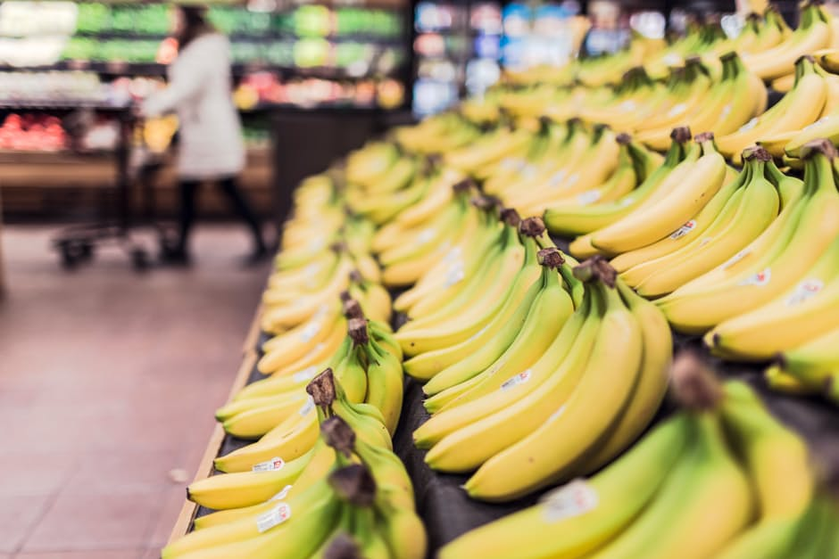
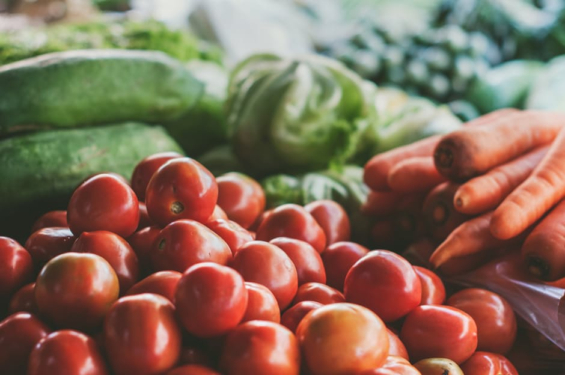
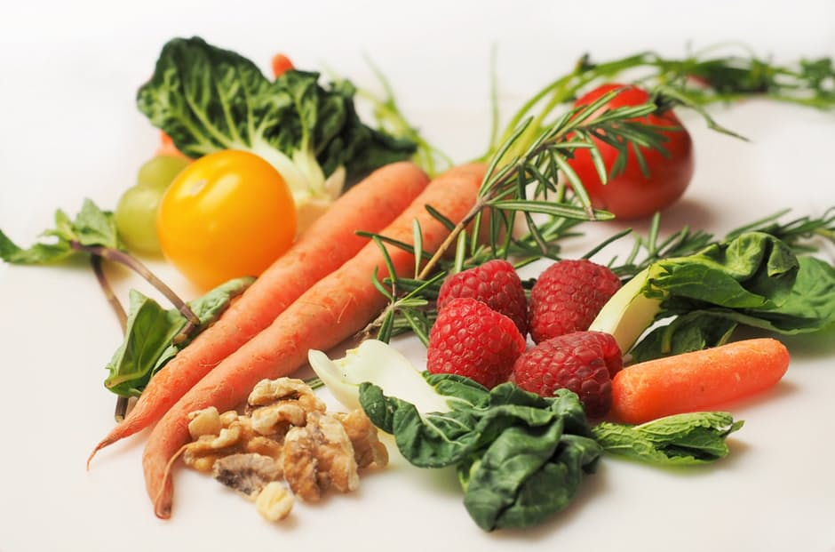

In order to gain weight , you should try the following :
Vegetables and Legumes group
For quick mass gain, you can try potatoes or sweet potatoes
Kale, mustard greens, spinach and the like can help you up your protein intake as they are the most protein dense, as with other leafy greens.
Fruit and fruit juices
Fruits like mangoes, papayas, and pineapples are very rich in sugar and can help pack on some extra, healthy pounds without too much effort. Also, the rich mineral, vitamin, and antioxidant content of these fruits (not to mention fiber) will make sure you are gaining weight in a healthy way.
A healthy and nutritious way to gain some pounds, sip 100-percent fruit juice that's full of sugar and added nutrients.
Eat dry fruits !! Because they have more calories and are still very nutritious.
Grain, cereal, wholegrain or high fiber varieties
Eating cereal can be a great way to gain weight and consume more fiber. However, stick to healthier forms such as oatmeal.
Avoid processed ones and cereals with refined grains or added sugar.
Meat, eggs and beans
Try Red Meat !! The fattier the meat, the more calories you will take in.
Eggs are super nutritional, they provide you with essential energy and nutrients.One egg has about 75 calories, along with 5 grams of fat and about 6 grams of protein, as well as essentials like vitamin B-12.
Beans are good protein substitutes,especially if you are a vegetarian.
Confections
Eat desserts that have a lot of nutrients, like frozen yogurt, oatmeal cookies, zucchini bread, and pumpkin pie.
Spread - soft, salty peanut butter on bread. It gives you approximately 192 calories plus it is extra high in protein.
For healthy weight loss, you should try to eat more of the following:
Vegetables and Legumes group
Leafy greens that include kale, spinach, collards, swiss chards are low in calories and carbohydrates,but loaded with fiber.
Raw vegetables make an outstanding snack. They satisfy the desire to crunch, they're full of water to help you feel full, and they're low in calories. When you're in the mood for chips and dip, replace the chips with raw veggies.
Fruit and fruit juices
Swap out sweets for fruits.
Snacking on a hydrating food like watermelon, cucumber, strawberries, or cantaloupe. The water will help you stay hydrated, and the combo of H2O and fiber will also fill your tummy up and keep you full
Grain, cereal, wholegrain or high fiber varieties
Oats are rich in fiber, so a serving can help you feel full throughout the day. Just a half cup packs 4.6 grams of starch, a healthy carb that boosts metabolism and burns fat.
Whole-grain foods such as whole wheat, brown rice, whole-grain breads, cereals, and waffles are a much better choice than refined white foods because they're generally higher in fiber, more nutritious, and more filling.Eat 3 cups of air-popped popcorn instead of 1 ounce of potato chips (about 15 chips) and you'll cut 65 calories and get a lot more food to crunch.
Quinoa is a nutritional all-star.This whole grain has 8 grams of hunger-busting protein and 5 grams of fiber in one cup. Mix it in some vegetables, nuts or lean protein and you're good to go.
Meat, eggs and beans
Eggs are incredibly nutrient dense and can help you get all the nutrients you need on a calorie restricted diet. Almost all the nutrients are found in the yolks.
You should try Salmon !! Salmon is loaded with high quality protein, healthy fats and supplies a significant amount of iodine.
Beans are a vegetable, a protein, and a great source of fiber.One cup packs 12.5 grams of fiber, just 4 grams of fat, and almost 15 grams of protein.
Confections
Treats that satisfy your sweet tooth don't have to bust the calorie bank. Sorbet, fat-free frozen yogurt, light or slow-churned ice creams, simple cookies, and fruit-based desserts adds up to only 100-150 calories.
Enjoying an occasional burger and fries won't do bad to your diet.
Some of the food you might want to eat less:
Avoid artificial products such as potato chips and fast food.
Avoid unprocessed Red Meat
Avoid foods like candy, pure sugar and foods containing a lot of sugar. Ice cream, pizza, potato chips and twizzlers are all bad for you and won't give you the gains you are looking for.
Avoid the white stuff (Saturated Fats) and be sure to eat a lot of fish and chicken breast
No Fizzy drinks!!
Hold the mayonnaise or cheese on your sandwich. Replace it with mustard, lettuce and tomato.
Drink 100% fruit juice instead of juice with added sugar.
Limit meat portions to 3-4 ounces (about the size of a deck of cards).
Articles

Healthy Eating on a Budget
Healthy dinners don't have to break the bank-use budget friendly ingredients...Read More

When is it Worth Buying Organic?
When deciding to spend money, fewer things are as worthwhile an investment as your health...Read More
How Long Until You See Results?
At a physiological and hormonal level, changes start to occur in the body instantly after a workout...Read More
What To Do When Your Workout Isn't Working
Tips for anyone working hard but not making progress...Read More
Eat Yourself Happy To Improve Mental Health
We reveal the way to eat to improve your happiness...Read More

Diet and Exercise Can Protect and Improve Mental Health
A 2014 study examined the link between diet, exercise and mental health...Read More